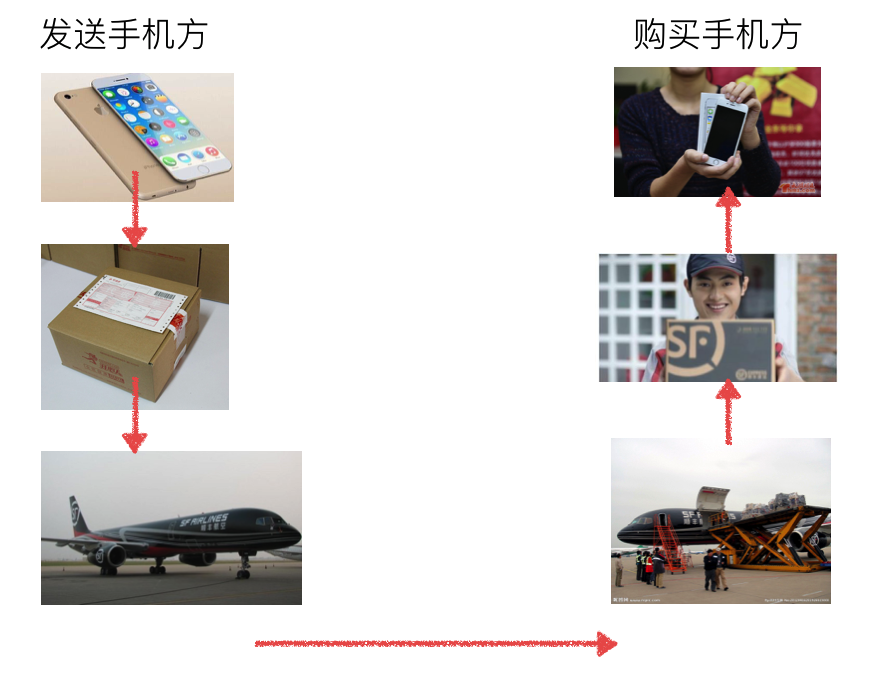

001 网络udp
3.1网络通信概述¶
1. 什么是网络¶
说明¶
- 网络就是一种辅助双方或者多方能够连接在一起的工具
- 如果没有网络可想
单机的世界是多么的孤单
单机游戏（不能和远在他乡的朋友一起玩）¶
2. 使用网络的目的¶
就是为了联通多方然后进行通信用的，即把数据从一方传递给另外一方
前面的学习编写的程序都是单机的，即不能和其他电脑上的程序进行通信
为了让在不同的电脑上运行的软件，之间能够互相传递数据，就需要借助网络的功能
小总结¶
- 使用网络能够把多方链接在一起，然后可以进行数据传递
- 所谓的网络编程就是，让在不同的电脑上的软件能够进行数据传递，即进程之间的通信
3.2ip地址¶
1. 什么是地址¶

地址就是用来标记地点的
2. ip地址的作用¶
ip地址：用来在网络中标记一台电脑，比如192.168.1.1；在本地局域网上是唯一的。¶
3. ip地址的分类（了解）¶
每一个IP地址包括两部分：网络地址和主机地址

3.1 A类IP地址¶
一个A类IP地址由1字节的网络地址和3字节主机地址组成，网络地址的最高位必须是“0”，
地址范围1.0.0.1-126.255.255.254
二进制表示为：00000001 00000000 00000000 00000001 - 01111110 11111111 11111111 11111110
可用的A类网络有126个，每个网络能容纳1677214个主机
3.2 B类IP地址¶
一个B类IP地址由2个字节的网络地址和2个字节的主机地址组成，网络地址的最高位必须是“10”，
地址范围128.1.0.1-191.255.255.254
二进制表示为：10000000 00000001 00000000 00000001 - 10111111 11111111 11111111 11111110
可用的B类网络有16384个，每个网络能容纳65534主机
3.3 C类IP地址¶
一个C类IP地址由3字节的网络地址和1字节的主机地址组成，网络地址的最高位必须是“110”
范围192.0.1.1-223.255.255.254
二进制表示为: 11000000 00000000 00000001 00000001 - 11011111 11111111 11111110 11111110
C类网络可达2097152个，每个网络能容纳254个主机
3.4 D类地址用于多点广播¶
D类IP地址第一个字节以“1110”开始，它是一个专门保留的地址。
它并不指向特定的网络，目前这一类地址被用在多点广播（Multicast）中
多点广播地址用来一次寻址一组计算机 s 地址范围224.0.0.1-239.255.255.254
3.5 E类IP地址¶
以“1111”开始，为将来使用保留
E类地址保留，仅作实验和开发用
3.6 私有ip¶
在这么多网络IP中，国际规定有一部分IP地址是用于我们的局域网使用，也就
是属于私网IP，不在公网中使用的，它们的范围是：
10.0.0.0～10.255.255.255 172.16.0.0～172.31.255.255 192.168.0.0～192.168.255.255
3.7 注意¶
IP地址127．0．0．1~127．255．255．255用于回路测试，
如：127.0.0.1可以代表本机IP地址，用http://127.0.0.1就可以测试本机中配置的Web服务器。
3.3Linux命令(ping, ifconfig)¶
查看或配置网卡信息：ifconfig¶
如果，我们只是敲：ifconfig，它会显示所有网卡的信息：
测试远程主机连通性：ping¶
通常用ping来检测网络是否正常
3.4端口¶
1. 什么是端口¶
端口就好一个房子的门，是出入这间房子的必经之路。
如果一个程序需要收发网络数据，那么就需要有这样的端口
在linux系统中，端口可以有65536（2的16次方）个之多！
既然有这么多，操作系统为了统一管理，所以进行了编号，这就是端口号
2. 端口号¶
端口是通过端口号来标记的，端口号只有整数，范围是从0到65535
注意：端口数不一样的*nix系统不一样，还可以手动修改
3. 端口是怎样分配的¶
端口号不是随意使用的，而是按照一定的规定进行分配。
端口的分类标准有好几种，我们这里不做详细讲解，只介绍一下知名端口和动态端口
3.1 知名端口（Well Known Ports）¶
知名端口是众所周知的端口号，范围从0到1023
80端口分配给HTTP服务 21端口分配给FTP服务
可以理解为，一些常用的功能使用的号码是估计的，好比 电话号码110、10086、10010一样
一般情况下，如果一个程序需要使用知名端口的需要有root权限
3.2 动态端口（Dynamic Ports）¶
动态端口的范围是从1024到65535
之所以称为动态端口，是因为它一般不固定分配某种服务，而是动态分配。
动态分配是指当一个系统程序或应用程序程序需要网络通信时，它向主机申请一个端口，主机从可用的端口号中分配一个供它使用。
当这个程序关闭时，同时也就释放了所占用的端口号
3.3 怎样查看端口 ？¶
- 用“netstat －an”查看端口状态
- lsof -i [tcp/udp]:2425
4. 小总结¶
端口有什么用呢 ？ 我们知道，一台拥有IP地址的主机可以提供许多服务，比如HTTP（万维网服务）、FTP（文件传输）、SMTP（电子邮件）等，这些服务完全可以通过1个IP地址来实现。那么，主机是怎样区分不同的网络服务呢？显然不能只靠IP地址，因为IP地址与网络服务的关系是一对多的关系。实际上是通过“IP地址+端口号”来区分不同的服务的。 需要注意的是，端口并不是一一对应的。比如你的电脑作为客户机访问一台WWW服务器时，WWW服务器使用“80”端口与你的电脑通信，但你的电脑则可能使用“3457”这样的端口。
3.5socket简介¶
1. 不同电脑上的进程之间如何通信¶
首要解决的问题是如何唯一标识一个进程，否则通信无从谈起！
在1台电脑上可以通过进程号（PID）来唯一标识一个进程，但是在网络中这是行不通的。
其实TCP/IP协议族已经帮我们解决了这个问题，网络层的“ip地址”可以唯一标识网络中的主机，而传输层的“协议+端口”可以唯一标识主机中的应用进程（进程）。
这样利用ip地址，协议，端口就可以标识网络的进程了，网络中的进程通信就可以利用这个标志与其它进程进行交互
注意：¶
- 所谓
进程指的是：运行的程序以及运行时用到的资源这个整体称之为进程（在讲解多任务编程时进行详细讲解）- 所谓
进程间通信指的是：运行的程序之间的数据共享- 后面课程中会详细说到，像网络层等知识，不要着急
2. 什么是socket¶
socket(简称 套接字) 是进程间通信的一种方式，它与其他进程间通信的一个主要不同是：
它能实现不同主机间的进程间通信，我们网络上各种各样的服务大多都是基于 Socket 来完成通信的
例如我们每天浏览网页、QQ 聊天、收发 email 等等
3. 创建socket¶
在 Python 中 使用socket 模块的函数 socket 就可以完成：
import socket socket.socket(AddressFamily, Type)
说明：¶
函数 socket.socket 创建一个 socket，该函数带有两个参数：
- Address Family：可以选择 AF_INET（用于 Internet 进程间通信） 或者 AF_UNIX（用于同一台机器进程间通信）,实际工作中常用AF_INET
- Type：套接字类型，可以是 SOCK_STREAM（流式套接字，主要用于 TCP 协议）或者 SOCK_DGRAM（数据报套接字，主要用于 UDP 协议）
创建一个tcp socket（tcp套接字）
import socket # 创建tcp的套接字 s = socket.socket(socket.AF_INET, socket.SOCK_STREAM) # ...这里是使用套接字的功能（省略）... # 不用的时候，关闭套接字 s.close()
创建一个udp socket（udp套接字）
import socket # 创建udp的套接字 s = socket.socket(socket.AF_INET, socket.SOCK_DGRAM) # ...这里是使用套接字的功能（省略）... # 不用的时候，关闭套接字 s.close()
说明¶
- 套接字使用流程 与 文件的使用流程很类似
- 创建套接字
- 使用套接字收/发数据
- 关闭套接字
3.6udp网络程序-发送、接收数据¶
1. udp网络程序-发送数据¶
创建一个基于udp的网络程序流程很简单，具体步骤如下：
- 创建客户端套接字
- 发送/接收数据
- 关闭套接字
代码如下：
#coding=utf-8 from socket import * # 1\. 创建udp套接字 udp_socket = socket(AF_INET, SOCK_DGRAM) # 2\. 准备接收方的地址 # '192.168.1.103'表示目的ip地址 # 8080表示目的端口 dest_addr = ('192.168.1.103', 8080) # 注意 是元组，ip是字符串，端口是数字 # 3\. 从键盘获取数据 send_data = input("请输入要发送的数据:") # 4\. 发送数据到指定的电脑上的指定程序中 udp_socket.sendto(send_data.encode('utf-8'), dest_addr) # 5\. 关闭套接字 udp_socket.close()
运行现象：
在Ubuntu中运行脚本：
在windows中运行“网络调试助手”：

2. udp网络程序-发送、接收数据¶
#coding=utf-8 from socket import * # 1\. 创建udp套接字 udp_socket = socket(AF_INET, SOCK_DGRAM) # 2\. 准备接收方的地址 dest_addr = ('192.168.236.129', 8080) # 3\. 从键盘获取数据 send_data = input("请输入要发送的数据:") # 4\. 发送数据到指定的电脑上 udp_socket.sendto(send_data.encode('utf-8'), dest_addr) # 5\. 等待接收对方发送的数据 recv_data = udp_socket.recvfrom(1024) # 1024表示本次接收的最大字节数 # 6\. 显示对方发送的数据 # 接收到的数据recv_data是一个元组 # 第1个元素是对方发送的数据 # 第2个元素是对方的ip和端口 print(recv_data[0].decode('gbk')) print(recv_data[1]) # 7\. 关闭套接字 udp_socket.close()
python脚本：
网络调试助手截图：
3.7python3编码转换¶
str->bytes:encode编码 bytes->str:decode解码
字符串通过编码成为字节码，字节码通过解码成为字符串。
>>> text = '我是文本' >>> text '我是文本' >>> print(text) 我是文本 >>> bytesText = text.encode() >>> bytesText b'\xe6\x88\x91\xe6\x98\xaf\xe6\x96\x87\xe6\x9c\xac' >>> print(bytesText) b'\xe6\x88\x91\xe6\x98\xaf\xe6\x96\x87\xe6\x9c\xac' >>> type(text) <class 'str'> >>> type(bytesText) <class 'bytes'> >>> textDecode = bytesText.decode() >>> textDecode '我是文本' >>> print(textDecode) 我是文本
其中decode()与encode()方法可以接受参数，其声明分别为:
bytes.decode(encoding="utf-8", errors="strict") str.encode(encoding="utf-8", errors="strict")
其中的encoding是指在解码编码过程中使用的编码(此处指“编码方案”是名词)，errors是指错误的处理方案。
详细的可以参照官方文档：
udp绑定信息¶
1. udp网络程序-端口问题¶
- 会变的端口号
重新运行多次脚本，然后在“网络调试助手”中，看到的现象如下：
说明：
- 每重新运行一次网络程序，上图中红圈中的数字，不一样的原因在于，这个数字标识这个网络程序，当重新运行时，如果没有确定到底用哪个，系统默认会随机分配
- 记住一点：这个网络程序在运行的过程中，这个就唯一标识这个程序，所以如果其他电脑上的网络程序如果想要向此程序发送数据，那么就需要向这个数字（即端口）标识的程序发送即可
2. udp绑定信息¶
<1>. 绑定信息¶
一般情况下，在一台电脑上运行的网络程序有很多，为了不与其他的网络程序占用同一个端口号，往往在编程中，udp的端口号一般不绑定
但是如果需要做成一个服务器端的程序的话，是需要绑定的，想想看这又是为什么呢？
如果报警电话每天都在变，想必世界就会乱了，所以一般服务性的程序，往往需要一个固定的端口号，这就是所谓的端口绑定
<2>. 绑定示例¶
#coding=utf-8
from socket import *
# 1\. 创建套接字
udp_socket = socket(AF_INET, SOCK_DGRAM)
# 2\. 绑定本地的相关信息，如果一个网络程序不绑定，则系统会随机分配
local_addr = ('', 7788) # ip地址和端口号，ip一般不用写，表示本机的任何一个ip
udp_socket.bind(local_addr)
# 3\. 等待接收对方发送的数据
recv_data = udp_socket.recvfrom(1024) # 1024表示本次接收的最大字节数
# 4\. 显示接收到的数据
print(recv_data[0].decode('gbk'))
# 5\. 关闭套接字
udp_socket.close()
运行结果：¶
<3>. 总结¶
- 一个udp网络程序，可以不绑定，此时操作系统会随机进行分配一个端口，如果重新运行此程序端口可能会发生变化
- 一个udp网络程序，也可以绑定信息（ip地址，端口号），如果绑定成功，那么操作系统用这个端口号来进行区别收到的网络数据是否是此进程的
3.9网络通信过程(简单版)¶

说明¶
- 网络通信过程中，之所需要ip、port等，就是为了能够将一个复杂的通信过程进行任务划分，从而保证数据准确无误的传递
3.10应用：udp聊天器¶
说明 在一个电脑中编写1个程序，有2个功能
- 1.获取键盘数据，并将其发送给对方
- 2.接收数据并显示
并且功能数据进行选择以上的2个功能调用
要求¶
实现上述程序 参考代码:
import socket def send_msg(udp_socket): """获取键盘数据，并将其发送给对方""" # 1. 从键盘输入数据 msg = input("\n请输入要发送的数据:") # 2. 输入对方的ip地址 dest_ip = input("\n请输入对方的ip地址:") # 3. 输入对方的port dest_port = int(input("\n请输入对方的port:")) # 4. 发送数据 udp_socket.sendto(msg.encode("utf-8"), (dest_ip, dest_port)) def recv_msg(udp_socket): """接收数据并显示""" # 1. 接收数据 recv_msg = udp_socket.recvfrom(1024) # 2. 解码 recv_ip = recv_msg[1] recv_msg = recv_msg[0].decode("utf-8") # 3. 显示接收到的数据 print(">>>%s:%s" % (str(recv_ip), recv_msg)) def main(): # 1. 创建套接字 udp_socket = socket.socket(socket.AF_INET, socket.SOCK_DGRAM) # 2. 绑定本地信息 udp_socket.bind(("", 7890)) while True: # 3. 选择功能 print("="*30) print("1:发送消息") print("2:接收消息") print("="*30) op_num = input("请输入要操作的功能序号:") # 4. 根据选择调用相应的函数 if op_num == "1": send_msg(udp_socket) elif op_num == "2": recv_msg(udp_socket) else: print("输入有误，请重新输入...") if __name__ == "__main__": main()
想一想 以上的程序如果选择了接收数据功能，并且此时没有数据，程序会堵塞在这，那么怎样才能让这个程序收发数据一起进行呢？别着急，学习完多任务知识之后就解决了O(∩_∩)O...